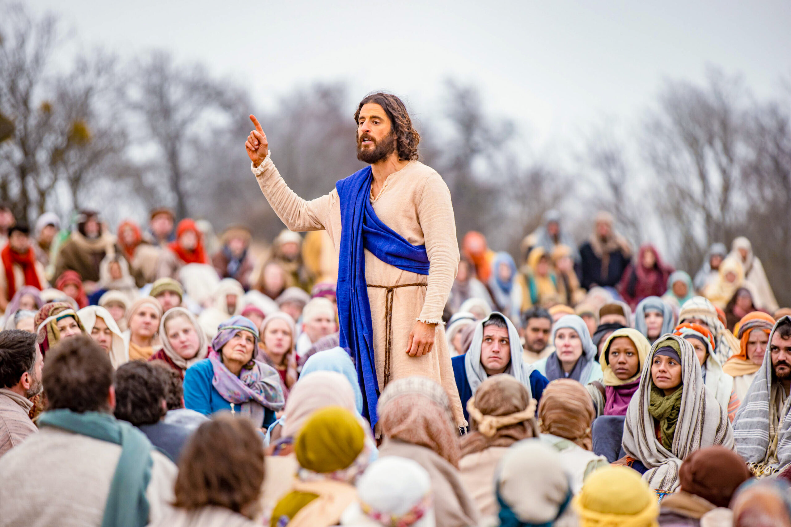
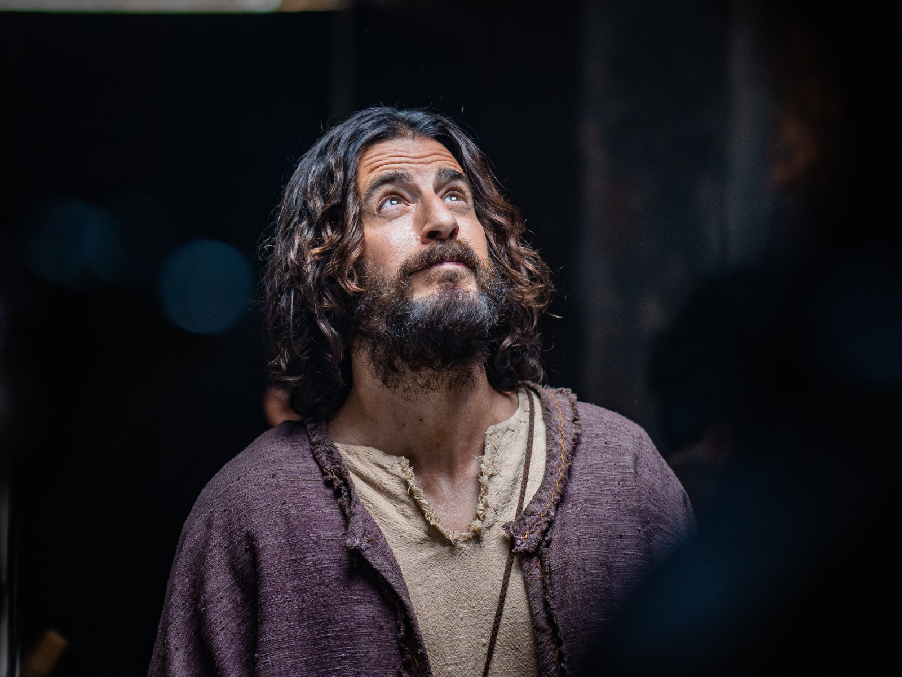
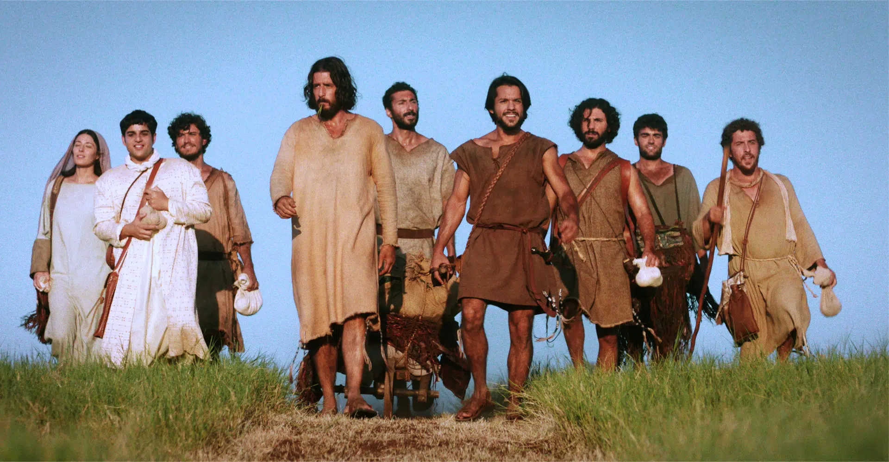

The Chosen é uma série dramática, disponível na Netflix, Globoplay e no app The Chosen de forma gratuita, que faz a releitura de uma grande narrativa religiosa. Lançada em 2019, a obra foi produzida por meio de uma campanha de financiamento coletivo que arrecadou mais de 10 milhões de dólares a partir de 19 mil investidores.